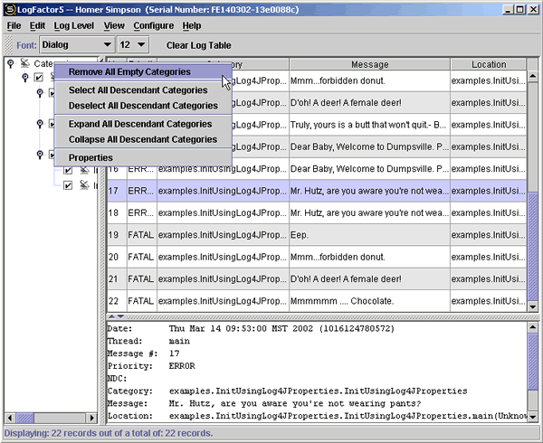

|
|
There are two ways of configuring LogFactor5: using a log4j properties file, or using the Configure menu in the LogFactor5 GUI.
The LF5Appender has a single property that can
be set via a log4j properties file, the
MaxNumberOfRecords property. This property is used by
LogFactor5 to determine the maximum number of records to
display at any one time in the GUI. If this maximum number is
exceeded, LogFactor5 begins to remove the oldest records, one
at a time. Removing records in this fashion reduces the risk
that your computer will run out of memory while the GUI is
running. If the MaxNumberOfRecords property is not set,
LogFactor5 sets a default value of 5000.
To set the MaxNumberOfRecords property using a regular java.util.Properties file, you should use the following line (replace A1 with the name of your appender):
log4j.appender.A1.MaxNumberOfRecords=2000
To set the MaxNumberOfRecords property using an XML properties file, you should use the following lines (replace the name LF5Appender with the name of your appender):
<appender name="LF5Appender" class="org.apache.log4j.lf5.LF5Appender">
<param name="MaxNumberOfRecords" value="1000"/>
</appender>
<root>
<priority value ="debug" />
<appender-ref ref="LF5Appender"/>
</root>
Note: Setting the maximum number of records to display via the Configure->Set Max Number Of Records menu in the LogFactor5 GUI will override any value that you set in this configuration file.
LogFactor5 allows you to save the current configuration of your logging console using the Configure menu. The Configure->Save menu option saves your current GUI configuration to a file called lf5_configuration.xml. This configuration file is a saved to the location <USER_HOME>/lf5 on your local drive.
The information saved in the configuration file is as follows:
Once you have saved a configuration, your configuration is loaded each time that you start LogFactor5.
You can remove your currently saved configuration by using the Configure->Reset menu option. This will delete the lf5_configuration.xml file from your local file system.
The Configure menu also includes a "Set Max Number Of Records" option, which allows you to change the maximum number of records that will be displayed in the GUI at any time. Setting the maximum number of records using this menu item will override any value that you set in your log4j property file (see below). Note: The value that you set using this option is not saved into the lf5_configuration file.
When you save your configuration using the Configure->Save menu option, and then start logging from a different application, you will likely find that many of the categories you saved are empty. You can remove these "dead" categories from the display by right clicking on the root of the category tree in the category explorer, and choosing the "Remove All Empty Categories" option. This will prune the category explorer tree to display only those channels that contain information.
